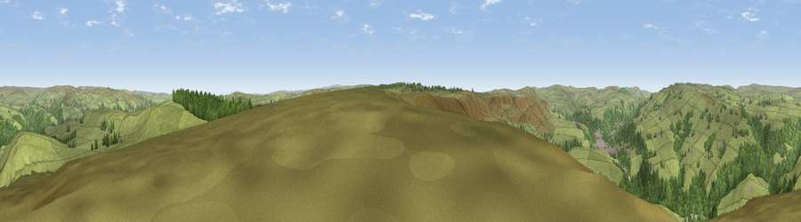

Viewpoint near Cragg Vale
#14235 in England · top 21% of its area beats it · near Cragg ValeThe view, rendered

A 360° render of this exact spot computed from the terrain model, tree cover and land cover — summer colours, afternoon light, calibrated against photographs of famous viewpoints. Real trees, hedges and buildings will differ in detail.
The panorama
Grey silhouette: terrain skyline in each direction (720 bearings, Earth curvature and refraction included). Dashed green: skyline with trees (+15 m) and buildings (+8 m) as obstacles. Blue strip: how far the ground is visible on each bearing.
Where the view opens
Wedge length = distance to the farthest visible ground on that bearing (vegetation-aware). Rings at 10, 25 and 50 km.
What fills the view
75% grassland · 22% woodland · 3% built-up
Angular shares of the visible panorama (visual magnitude), not map area. Landscape diversity 0.29 (0–1 Shannon).
Key numbers
More beautiful places nearby
The staircase of upgrades: each row has a higher view potential than everything closer. Driving times are estimates from straight-line distance, calibrated against real road routing — check an actual route before setting out.
| Place | Direction | Drive | Score |
|---|---|---|---|
| Viewpoint near Cragg Vale | ESE · 5 km | ~11 min | 62.0 |
| Viewpoint near Lydgate | WNW · 5 km | ~11 min | 62.3 |
| Viewpoint near Chiserley | NE · 5 km | ~12 min | 63.9 |
| Viewpoint near Shawforth | WSW · 7 km | ~15 min | 66.1 |
| Viewpoint near Timbercliffe | S · 8 km | ~16 min | 68.7 |
| Viewpoint near Stump Cross | ENE · 12 km | ~22 min | 71.5 |
| Viewpoint near Edenfield | WSW · 16 km | ~28 min | 77.5 |
| Darwen Hill | W · 29 km | ~46 min | 80.7 |
53.71443, -2.04201 · source: screening · position refined by local search. Computed location — check access rights before visiting.